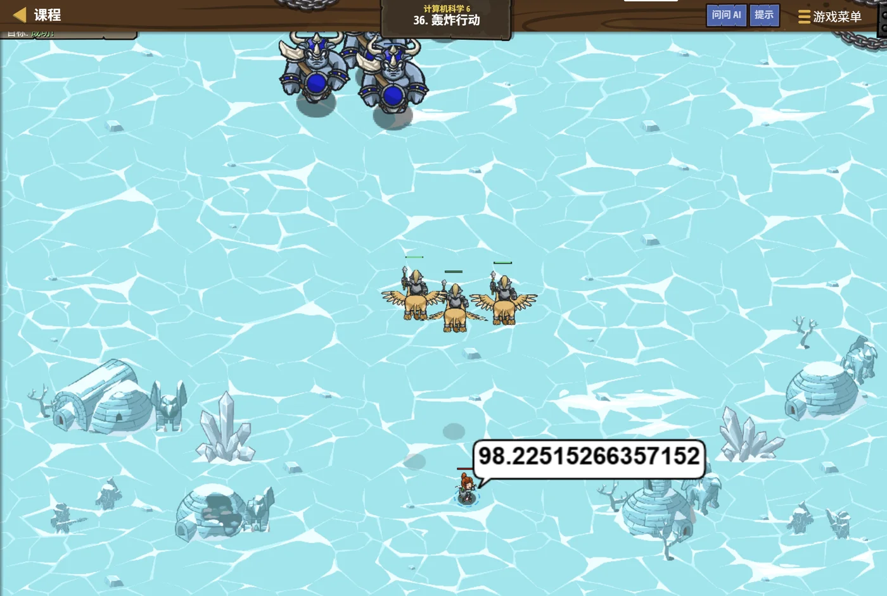
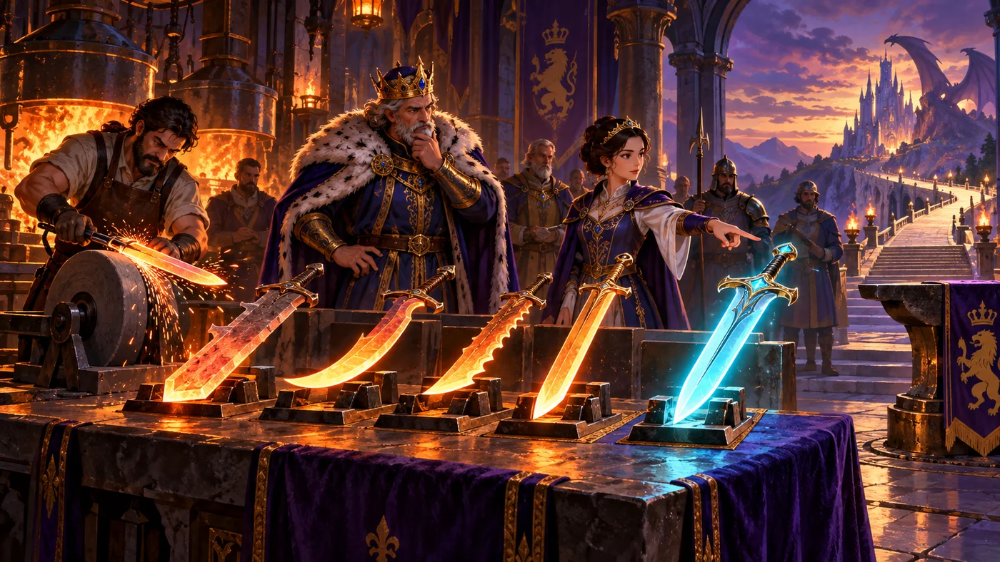

故事：最后的战场上一片混乱：敌人、友军、建筑混在一起。
你要在最短时间内做出判断——谁该打、谁不能碰、先打哪个。
贺舒曼的声音很平静：别慌。先分类，再定优先级，最后按顺序执行。
这就是你这一路学到的全部。
扣哒考级 · GESP C++ 八级 · 第 8 单元 | 寂灭王座 THE THRONE
王座终试 综合算法优化
Algorithm Optimization

贺舒曼
镜中先知 · 你的向导
最后一道门打开了。王座就在眼前，可守门人拦住了你。
最后一试。他把一路上的东西全摆了出来—— 符文、水晶、数列、链子、网格、石壁、星图……
不看你会不会某一招，只看你能不能把学过的东西凑到一起，解决一个新问题。
贺舒曼站在你身后，轻声说：别想着用什么高级算法。先写个能跑的，再想办法让它更快。
最后一试。他把一路上的东西全摆了出来—— 符文、水晶、数列、链子、网格、石壁、星图……
不看你会不会某一招，只看你能不能把学过的东西凑到一起，解决一个新问题。
贺舒曼站在你身后，轻声说：别想着用什么高级算法。先写个能跑的，再想办法让它更快。
贺舒曼 · 镜中先知
这是考纲之路的最后一站。这一单元不教新知识，而是教你"怎么把前面学的用出来"。我陪你走过了三级、四级、五级、六级、七级、八级——现在，是时候把它们串成一条线了。
assets/illustrations/py-L8-08-01_final_trial.webp
【配图位】寂灭王座大殿全景：空荡的王座居于高处，座前地面上浮现出六层同心光纹，每层刻着不同的符号（数论、结构、算法、图、几何、效率）；一名少年站在最外圈，手中握着一支发光的笔。
0 单元导语与目标
Unit Overview
0.1 学习目标
0.2 考纲对照
1学完这个单元，你将能……
- 按四步流程拆解一道综合题
- 先写"朴素解法"，再逐步优化
- 掌握四种常用优化手段（含用等差、等比数列公式替代循环）
- 在时间与空间之间做取舍
- 检查边界与极端数据
- 自信地面对陌生题目
2对标 GESP 考纲（C++ 八级）
- 能综合运用多级知识点分析与解决问题
- 掌握从朴素解法到优化解法的改进思路
- 具备基本的算法取舍与正确性检验意识
- 能根据数学知识优化算法（等差、等比数列求和公式等）
- 考核目标：能独立完成中等难度的综合算法题
1 综合题的四步解法
Four Steps
1.1 综合题的四步解法
图 2（SVG）：综合题的四步流程
1.2 为什么要先写朴素解法
为什么要"先写朴素解法"？
① 它能保证你有分拿——哪怕只通过一小部分测试数据；
② 它可以当"标准答案"——优化之后，用小数据对拍一下，就知道对不对；
③ 它让你想清楚问题——写的时候常常会突然发现"这里可以更快"。
考试时最忌讳的，是在"一次写出最优解"上死磕。
① 它能保证你有分拿——哪怕只通过一小部分测试数据；
② 它可以当"标准答案"——优化之后，用小数据对拍一下，就知道对不对；
③ 它让你想清楚问题——写的时候常常会突然发现"这里可以更快"。
考试时最忌讳的，是在"一次写出最优解"上死磕。
2 一个完整的优化案例
A Complete Example
2.1 第一版：朴素双重循环
看一道具体的题：给定 n 个数，问有多少对数的和等于目标值 k。
第一版：朴素双重循环（O(n²)）
C++
int a[5] = {1, 3, 5, 7, 9};
int k = 10;
int count = 0;
for (int i = 0; i < 5; i++) {
for (int j = i + 1; j < 5; j++) {
if (a[i] + a[j] == k) {
count = count + 1;
}
}
}
cout << count << endl;
能跑通 结果 2（(1,9)、(3,7)）。
问题 n = 10 万时要比较 50 亿次，肯定超时
问题 n = 10 万时要比较 50 亿次，肯定超时
2.2 第二版：用哈希表，一遍扫完
第二版：用哈希表，一遍扫完（O(n)）
C++
int a[5] = {1, 3, 5, 7, 9};
int k = 10;
int count = 0;
unordered_map<int, int> seen; // 记录每个数出现过几次
for (int x : a) {
int need = k - x; // 要配成 k，需要另一个数是几
count = count + seen[need]; // 之前见过几个这样的数
seen[x] = seen[x] + 1; // 把当前的数记下来
}
cout << count << endl;
同样结果 2 但只遍历了一遍，O(n)——n = 10 万时瞬间完成
2.3 优化的关键一步在哪里
2.4 从 O(n²) 到 O(n) 的这一步
优化的关键一步在哪里？
原版要"对每个数，回头找有没有配对的"——这是 O(n) 的查找，套在循环里就变成 O(n²)。
优化版把它换成"用字典记住见过的数"——查找变成 O(1)。
答案没变，复杂度却降了一个量级。这就是"换数据结构"的威力。
优化版把它换成"用字典记住见过的数"——查找变成 O(1)。
答案没变，复杂度却降了一个量级。这就是"换数据结构"的威力。
3 四把常用的"优化刀"
Four Optimization Tools
3.1 四把常用的"优化刀"
| 手段 | 怎么做 | 效果 | 典型例子 |
|---|---|---|---|
| ① 换数据结构 | 把列表的"逐个查找"换成字典/集合 | O(n) → O(1) 的查找 | 判重、两数之和 |
| ② 预处理 | 先算好一张表，之后直接查 | 多次查询变 O(1) | 前缀和、素数筛、杨辉三角 |
| ③ 二分 / 倍增 | 用"折半"或"翻倍"代替逐个推进 | O(n) → O(log n) | 二分查找、快速幂 |
| ④ 递推 / DP | 把重复计算的子问题记下来 | O(2ⁿ) → O(n) | 斐波那契、路径计数 |
3.2 前缀和长什么样
"预处理"长什么样：前缀和
C++
vector<int> a = {3, 1, 4, 1, 5, 9, 2, 6};
// 预处理：pre[i] 表示前 i 个数的和
vector<int> pre(a.size() + 1, 0);
for (int i = 0; i < a.size(); i++) {
pre[i + 1] = pre[i] + a[i];
}
// 现在"求第 L 到第 R 个数的和"只要两步（O(1)）
int rangeSum(int L, int R) {
return pre[R + 1] - pre[L];
}
cout << rangeSum(2, 5) << endl; // 4+1+5+9 = 19
要点 花 O(n) 做一次预处理，以后每次查询都是 O(1)——查询次数越多，越划算
3.3 用公式换掉循环：等差、等比数列
最后一把刀最"数学"：能一步算出来的，就别循环。八级考纲专门点了这一条——用数学知识优化算法。
公式 vs 循环：差了一亿次运算
C++
int n = 100000000; // 一亿
// 笨办法：循环一亿次
long long total = 0;
for (int i = 1; i <= n; i++) total += i;
cout << total << endl; // 要等好几秒
// 聪明办法：等差数列求和公式
cout << (1LL + n) * n / 2 << endl; // 瞬间出结果，两者必须相等
// 等比数列：1 + 2 + 4 + ... + 2^(k-1) = 2^k - 1
int k = 20;
cout << (1 << k) - 1 << endl; // 1048575要点 结果必须一样，但一个瞬间完成、一个要等几秒
| 数列 | 求和公式 | 例子 |
|---|---|---|
| 等差数列（首项 a、末项 b、共 n 项） | (a + b) × n ÷ 2 | 1+2+…+100 = (1+100)×100÷2 = 5050 |
| 等差（从 1 加到 n） | n(n+1) ÷ 2 | 1+2+…+10 = 10×11÷2 = 55 |
| 等比（首项 1、公比 2、共 k 项） | 2^k − 1 | 1+2+4+8 = 2⁴−1 = 15 |
| 等比（首项 a、公比 q，共 k 项） | a × (q^k − 1) ÷ (q − 1) | 若用不上，先记前两行即可 |
一句话记住这把刀：
凡是"一加一大片"的循环，先想想能不能用公式一步算出来。
打个比方：数一摞砖有几块——可以一块块数（O(n)），也可以量出长和宽再相乘（O(1)）。算法优化，往往就是找到那把"尺子"。
凡是"一加一大片"的循环，先想想能不能用公式一步算出来。
打个比方：数一摞砖有几块——可以一块块数（O(n)），也可以量出长和宽再相乘（O(1)）。算法优化，往往就是找到那把"尺子"。
4 代码实战
Level Practice
关卡
轰炸行动
进入关卡 →思路：把整场战斗拆成"分类 → 排序 → 执行"三步。 这正是综合题的标准解法：先理清结构，再动手。

assets/stages/py-L8-08-stage1_bombing_run.webp
【关卡截图位】请把《轰炸行动》的游戏画面截图放到此处（放入 assets/stages/ 目录，文件名为 py-L8-08-stage1_bombing_run.webp）。
重点示例：先筛选，再按优先级处理
C++
// ① 分类：把"该打的目标"挑出来（筛选思想）
vector<Unit> targets;
for (Unit e : hero.findEnemies()) {
if (e.type != "sand-yak") { // 友军不要碰
targets.push_back(e);
}
}
// ② 排序：按血量从低到高（先打弱的，效率高）
sort(targets.begin(), targets.end(),
[](Unit a, Unit b) { return a.health < b.health; });
// ③ 执行：逐个处理
for (Unit t : targets) {
while (t.health > 0) {
hero.attack(t);
}
}
要点 筛选 → 排序 → 执行；
sort(key=...) 可以按任意字段排序
这三步，你其实全都学过：
① 筛选——四级学的"空容器 + 遍历 + push_back"；
② 排序——四级学的排序算法（这里直接用了标准库的 sort，更快）；
③ 执行——最基础的循环。
综合题就是这样：不考新东西，考的是"你能不能把它们串起来"。
去扣哒世界闯这一关 →
② 排序——四级学的排序算法（这里直接用了标准库的 sort，更快）；
③ 执行——最基础的循环。
综合题就是这样：不考新东西，考的是"你能不能把它们串起来"。

assets/illustrations/py-L8-08-02_optimize_knives.webp
【配图位】王座终试的石台上插着四把发光的短刀，每把刀柄上刻着一行小字："预处理"、"换数据结构"、"贪心剪枝"、"空间换时间"；一名学徒把其中一把抽出，刀锋指向一张写着 O(n²) 的旧图纸。
5 常见陷阱
Common Pitfalls

扣哒鸭 · 调试官
综合题丢分，往往不是"不会"，而是"没考虑全"。四条，最后再叮嘱你一次。
1
一上来就想最优解，卡住不动。

扣哒鸭：先写个能跑的笨办法。
它能帮你拿到部分分，还能当"标准答案"用来对拍。
有了笨办法，再去想怎么把它变快——这条路永远比"空想最优解"稳。
它能帮你拿到部分分，还能当"标准答案"用来对拍。
有了笨办法，再去想怎么把它变快——这条路永远比"空想最优解"稳。
正确策略：先跑通，再优化
2
不看数据范围就动手。

扣哒鸭：数据范围是题目给你的最重要提示。
n ≤ 20 就放心枚举；n ≤ 10⁵ 就别写双重循环。 花十秒看范围，能省半小时。
n ≤ 20 就放心枚举；n ≤ 10⁵ 就别写双重循环。 花十秒看范围，能省半小时。
正确做法：读题先圈出数据范围
3
只测了样例，没测边界。

扣哒鸭：一定要试这几种：
空数据（n = 0）、只有一个元素、全是相同元素、极大值、负数。
很多"样例过了但不得分"，都是边界没处理。
空数据（n = 0）、只有一个元素、全是相同元素、极大值、负数。
很多"样例过了但不得分"，都是边界没处理。
检验清单：空、单、同、大、负
4
优化之后就不管了，没和笨办法对一下答案。

扣哒鸭：优化很容易改出新 bug。
用几十组小数据，让两版程序各跑一遍，结果一致才敢交。 这个习惯能救你很多次。
用几十组小数据，让两版程序各跑一遍，结果一致才敢交。 这个习惯能救你很多次。
正确做法：小数据对拍两版结果
6 题目练习
Practice
第 1 题改编自 2026 年 9 月 · C++ 八级 第 14 题，其余为原创练习题。
改编自 2026 年 9 月 · C++ 八级 · 第 14 题单选题
对长度为 n 的数组，使用差分数组支持 m 次区间加操作，最后通过一次前缀和还原每个位置的最终值。
整个过程的渐进时间复杂度为（ ）。
整个过程的渐进时间复杂度为（ ）。
A.O(nm) B.O((n + m) log n) C.O(n log m) D.O(n + m)
查看答案与详解
答案：D。"差分 + 前缀和"这套组合拳的账最好算：
· 每一次区间加操作，只需要改差分数组的两个位置（左端 +v、右端后一位 −v）→ 单次
· 最后扫一遍做前缀和还原 →
合起来正是 O(n + m)。
A 错：
B、C 错：这套方法里根本没有排序、也没有二分，不会出现 log 因子。
对比一下（这是常考的"优化前后"）：
· 朴素：每次
· 差分：每次
当 n、m 都到 10⁵ 时，前者是 10¹⁰（必超时），后者只有 2×10⁵ ——这就是"换一种数据结构/技巧"带来的差距。
对应小节3 四把常用的"优化刀"。
· 每一次区间加操作，只需要改差分数组的两个位置（左端 +v、右端后一位 −v）→ 单次
O(1)，m 次就是 O(m)；· 最后扫一遍做前缀和还原 →
O(n)。合起来正是 O(n + m)。
A 错：
O(nm) 是"每次区间加都把区间内每个数改一遍"的朴素做法 ——差分数组要解决的正是这个问题；B、C 错：这套方法里根本没有排序、也没有二分，不会出现 log 因子。
对比一下（这是常考的"优化前后"）：
· 朴素：每次
O(n) × m 次 → O(nm)；· 差分：每次
O(1) + 最后 O(n) → O(n + m)。当 n、m 都到 10⁵ 时，前者是 10¹⁰（必超时），后者只有 2×10⁵ ——这就是"换一种数据结构/技巧"带来的差距。
对应小节3 四把常用的"优化刀"。
原创练习题单选题
面对一道陌生题目，最推荐的动手顺序是（ ）。
A.直接想最优解
B.先读数据范围，写朴素解法，再优化，最后检验边界
C.先写代码，边写边想
D.先背一个模板套上去
B.先读数据范围，写朴素解法，再优化，最后检验边界
C.先写代码，边写边想
D.先背一个模板套上去
查看答案与详解
答案：B。这是最稳的解题流程：
读范围 → 朴素解法 → 估复杂度并优化 → 检验边界与极端数据。
A 的风险：想不出来就卡死；D 的风险：套错了模板，反而更乱。
对应小节1 综合题的四步解法。
读范围 → 朴素解法 → 估复杂度并优化 → 检验边界与极端数据。
A 的风险：想不出来就卡死；D 的风险：套错了模板，反而更乱。
对应小节1 综合题的四步解法。
原创练习题单选题
判断"一个列表里有没有重复元素"，用哪种做法最快？（ ）
A.双重循环两两比较
B.先排序，再比较相邻元素
C.用集合记录见过的元素
D.用递归判断
B.先排序，再比较相邻元素
C.用集合记录见过的元素
D.用递归判断
查看答案与详解
答案：C。用集合记录"见过的元素"，
每次
A 是 O(n²)；B 是 O(n log n)（排序的代价）；D 更慢。
这就是"换数据结构"带来的提速。
对应小节3 四把常用的"优化刀"。
in 判断是 O(1)，整体 O(n)。A 是 O(n²)；B 是 O(n log n)（排序的代价）；D 更慢。
这就是"换数据结构"带来的提速。
对应小节3 四把常用的"优化刀"。
原创练习题判断题
写"前缀和"数组之后，查询任意区间的和可以在 O(1) 时间内完成。（ ）
查看答案与详解
答案：正确（√）。预处理出
区间 [L, R] 的和 =
代价：预处理要花 O(n)，并额外用 O(n) 的空间。查询越多越划算。
对应小节3 四把常用的"优化刀"。
pre[i]（前 i 个数的和）之后，区间 [L, R] 的和 =
pre[R+1] - pre[L]——一次减法，O(1)。代价：预处理要花 O(n)，并额外用 O(n) 的空间。查询越多越划算。
对应小节3 四把常用的"优化刀"。
原创练习题单选题
已知
a = {3, 1, 4, 1, 5, 9, 2, 6}，
求第 2 个到第 5 个数（下标 2 到 5）的和，用前缀和计算，结果是（ ）。A.19 B.11 C.15 D.17
查看答案与详解
答案：A。下标 2 到 5 的元素是 4、1、5、9，和 = 19。
用前缀和：pre = [0, 3, 4, 8, 9, 14, 23, 25, 31]，
注意：是
对应小节3 四把常用的"优化刀"。
用前缀和：pre = [0, 3, 4, 8, 9, 14, 23, 25, 31]，
pre[6] - pre[2] = 23 - 4 = 19。注意：是
pre[R+1] - pre[L]，不是 pre[R] - pre[L]。对应小节3 四把常用的"优化刀"。
原创练习题判断题
优化算法时，"用空间换时间"是一种常见且合理的取舍。（ ）
查看答案与详解
答案：正确（√）。比如用哈希表把查找从 O(n) 降到 O(1)，
代价是多用 O(n) 的空间。
只要空间没超出限制，这种交换就很值得。 前缀和、记忆化搜索、素数筛都是这个思路。
对应小节3 四把常用的"优化刀"。
只要空间没超出限制，这种交换就很值得。 前缀和、记忆化搜索、素数筛都是这个思路。
对应小节3 四把常用的"优化刀"。
原创练习题单选题
检验程序时，下面哪一组测试数据最容易被忽略？（ ）
A.题目给的样例
B.数据量为 0 或 1 的极端情况
C.题目描述里明说的普通情况
D.自己随手编的一组普通数据
B.数据量为 0 或 1 的极端情况
C.题目描述里明说的普通情况
D.自己随手编的一组普通数据
查看答案与详解
答案：B。样例和普通情况大家都会测，
最容易漏的是"空数据、只有一个元素、全相同"这类边界。
建议的检验清单：空、单、同、大、负（空数据、单个元素、全部相同、极大值、负数）。
对应小节5 常见陷阱。
建议的检验清单：空、单、同、大、负（空数据、单个元素、全部相同、极大值、负数）。
对应小节5 常见陷阱。
原创练习题编程题
题目要求：给定一个整数列表，找出和最大的连续子数组的和（子数组至少含一个元素），
要求时间复杂度为 O(n)。
查看参考答案与要点
int maxSubArray(const vector<int>& a) {
int best = a[0]; // 只含第一个元素时的最大和
int cur = a[0]; // 以当前位置结尾的最大子数组和
for (int i = 1; i < a.size(); i++) {
// 要么"接上前面"，要么"从自己重新开始"
cur = max(a[i], cur + a[i]);
best = max(best, cur);
}
return best;
}
cout << maxSubArray({-2, 1, -3, 4, -1, 2, 1, -5, 4}) << endl; // 6
cout << maxSubArray({-5, -2, -8}) << endl; // -2
输出：6、-2
思路解析：
① 朴素解法是枚举所有起点和终点，复杂度 O(n²)；
这里用动态规划降到了 O(n)；
② 状态：cur 表示"以当前位置结尾的最大子数组和"；
③ 转移：cur = max(a[i], cur + a[i])——
如果前面的累加还不如从自己重新开始，就丢掉前面；
④ 易错点：初值不能设成 0，否则全是负数时会返回 0（而那不是一个合法的子数组和）。
这道题综合了"动态规划"和"效率优化"，是八级的典型综合题。
对应小节2 一个完整的优化案例。
assets/illustrations/py-L8-08-03_road_review.webp
【配图位】从烛火岗哨一路延伸到寂灭王座的长路俯瞰图：沿途分段标着一~八级的秘境名，每一段都点着灯；一名学徒站在最末端的王座台阶上回头张望整条来路。
7 考纲之路全程回顾
The Whole Journey
贺舒曼 · 镜中先知
走到这里，你已经把整条考纲之路走完了。回头看看——从"让英雄向右走一格"，到"综合运用算法优化一个陌生问题"。
这一路上你学过的东西，我都记着。让我替你数一数。
| 级别 | 核心收获 |
|---|---|
| 一级 | 指令与函数调用、变量、数值、字符串、if/else、while 循环 |
| 二级 | 坐标与相对位置、数字运算、字符串进阶、嵌套分支、循环与分支配合 |
| 三级 | 原码反码补码、进制转换、位运算、算法与描述、数组与列表、字符串函数、枚举与模拟 |
| 四级 | 复合数据类型嵌套、二维数组、字典、函数与模块化、参数与作用域、递推、排序、文件与异常 |
| 五级 | 初等数论、欧几里得与素数筛、大整数、链表、二分查找、递归、分治、贪心与复杂度 |
| 六级 | 树与遍历、哈夫曼编码、DFS 与 BFS、动态规划、面向对象、栈与队列 |
| 七级 | 数学库、二维 DP、图与遍历、泛洪算法、哈希表 |
| 八级 | 计数原理、排列组合、杨辉三角、倍增、计算几何、图论进阶、效率分析、综合优化 |
最后送你三句话：
一、遇到不会的题，先写朴素解法——能跑通的答案，永远比完美的空想有价值。
二、看到数据范围，就知道该用什么复杂度——这是最实用的应试技巧。
三、优化完记得对拍和测边界——细节决定得分。
从今天起，你不再只是"会写程序的人"，而是"会设计和优化程序的人"。
一、遇到不会的题，先写朴素解法——能跑通的答案，永远比完美的空想有价值。
二、看到数据范围，就知道该用什么复杂度——这是最实用的应试技巧。
三、优化完记得对拍和测边界——细节决定得分。
从今天起，你不再只是"会写程序的人"，而是"会设计和优化程序的人"。
8 本单元小结
Unit Summary
贺舒曼 · 镜中先知
王座的门开了，可你回头看了一眼来时的路。那条路上有河谷、有矿坑、有齿轮、有绿洲、有云阶、有雷塔。
你走完了全程。接下来要去哪儿，由你自己决定。
我在镜子里，等你带回新的故事。
你在王座前收获了什么
- 四步解法——读懂（看范围）→ 朴素（先跑通）→ 优化（估复杂度）→ 检验（测边界）。
- 先朴素再优化——朴素解法能拿部分分，还能当"标准答案"对拍。
- 四把优化刀——换数据结构、预处理、二分/倍增、递推/DP。
- 换数据结构——列表查找 O(n) → 字典/集合查找 O(1)。
- 预处理——前缀和让区间查询从 O(n) 降到 O(1)。
- 数据范围提示——n ≤ 20 枚举；n ≤ 10⁵ 要 O(n log n) 以上。
- 边界检验清单——空、单、同、大、负。
- 用空间换时间——常见的合理取舍；但别让空间超标。